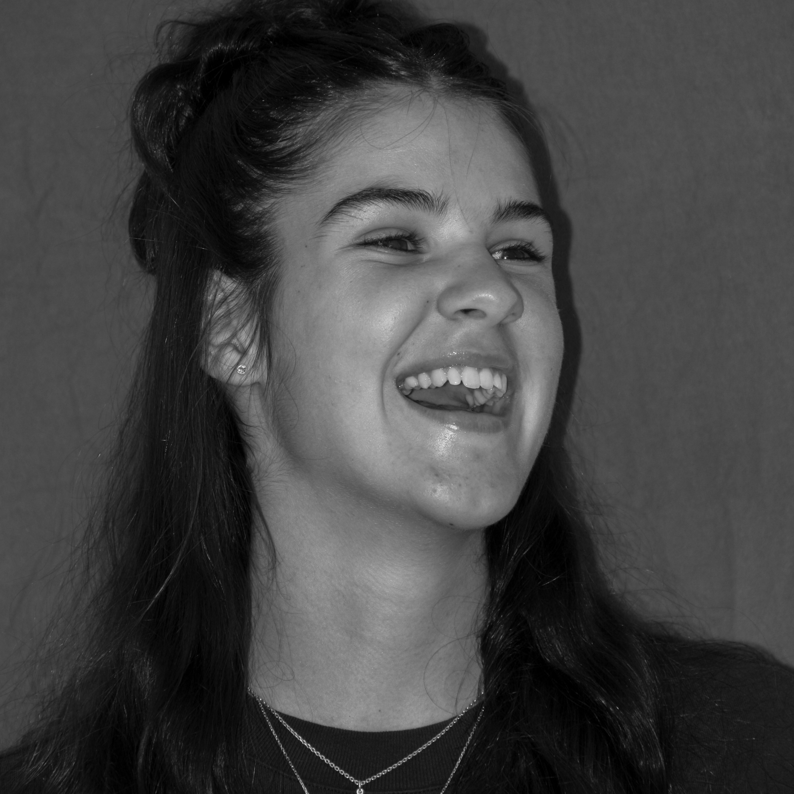
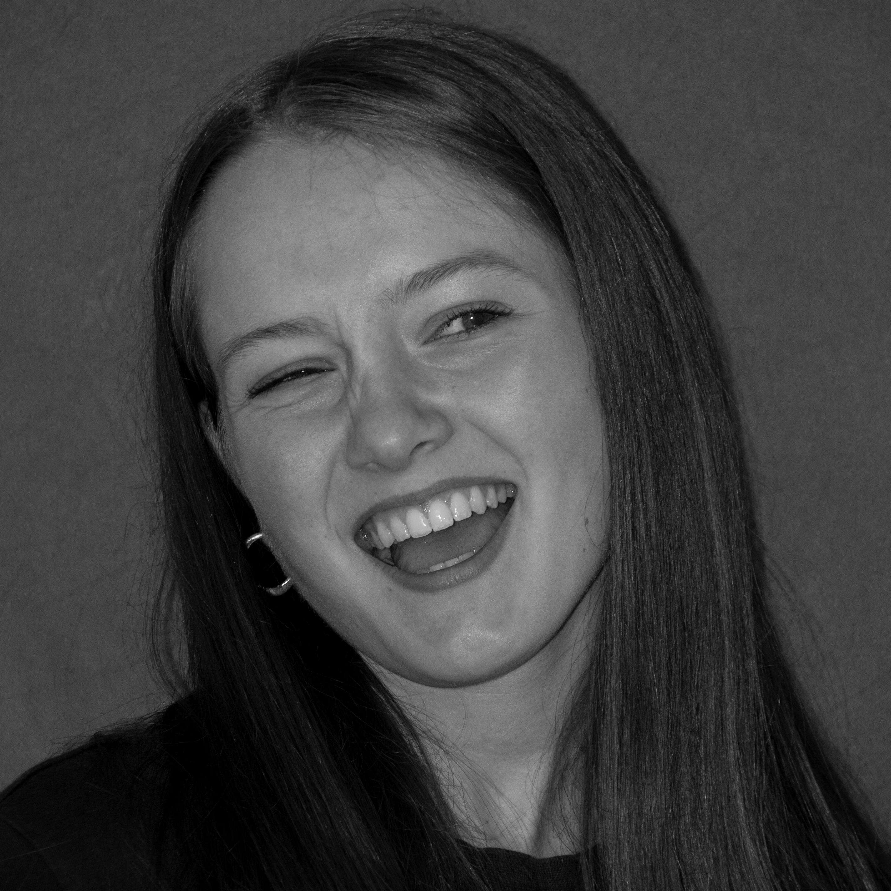
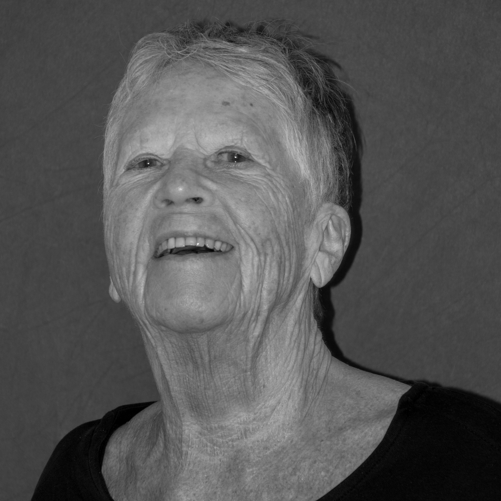
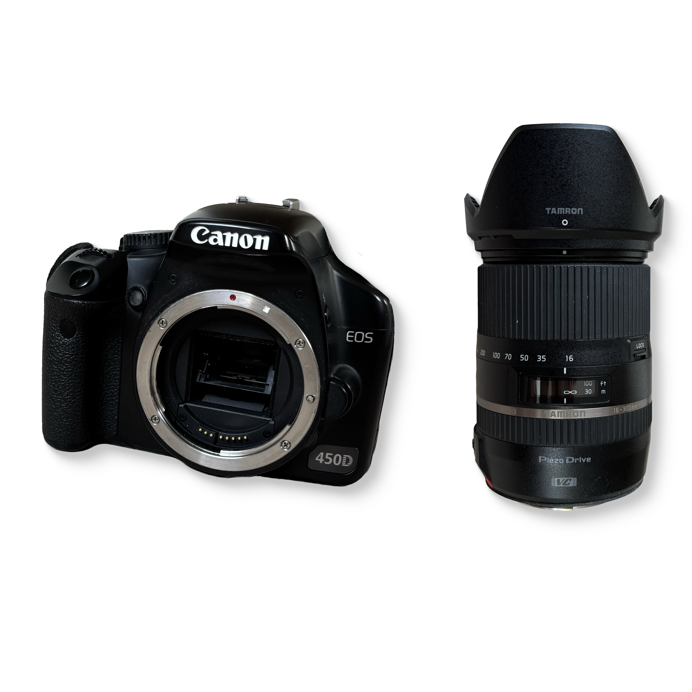

ABOUT
In diesem Projekt geht es nicht nur um mich. Es geht auch um die Menschen, die mir bei diesem Projekt geholfen haben. Ich möchte mich gerne bei allen bedanken.

Über mich
Hi, ich bin Elin und Mediamatik-Lernende am KBZ. Ich bin mit zwei grossen Schwestern aufgewachsen. Immer schon hatte ich das Bedürfnis nach Gerechtigkeit, einen Wunsch, alles machen zu dürfen, was andere auch können. Im Jahr 2024 nahm mich meine grösste Schwester das erste mal an eine feministische Demonstration mit. Das hat etwas mit mir gemacht und ich habe begonnen, mich mit dem Feminismus zu beschäftigen. Seitdem ist das ein wichtiger Teil von mir, deshalb wollte ich das in mein Projekt einbringen.
Credits
Noemi
Rahel

Simona

Ruth
Unterstützende Personen
Lehrpersonen am KBZ
- Rémy Niederer
- Ann-Christin Gerlach
- Angela Imfeld
Weitere Unterstützung
- Mara Kiener
- David Häfliger
- Matthias Häfliger
- Lois Häfliger

Meine Kamera
Ich verwende für meine Fotos eine Canon EOS 450d mit einem Tamron Objektiv. Eigentlich ist das ein Reise-Set, weil der Zoom sehr gut ist. Das ermöglicht mir aber, eine gute Tiefenschärfe zu erzeugen, was die Gesichter noch mehr herausstechen lässt. Mein Vater hat sie mir zur Verfügung gestellt.
RAW-BILDER
Die unkomprimierten RAW-Bilder stehen hier ohne Bearbeitung und Filter als ZIP-Ordner zur Verfügung. Du wirst direkt zu SharePoint weitergeleitet. Logge dich dort einfach kurz mit deinen Zugangsdaten ein, um Zugriff auf den Ordner zu bekommen.